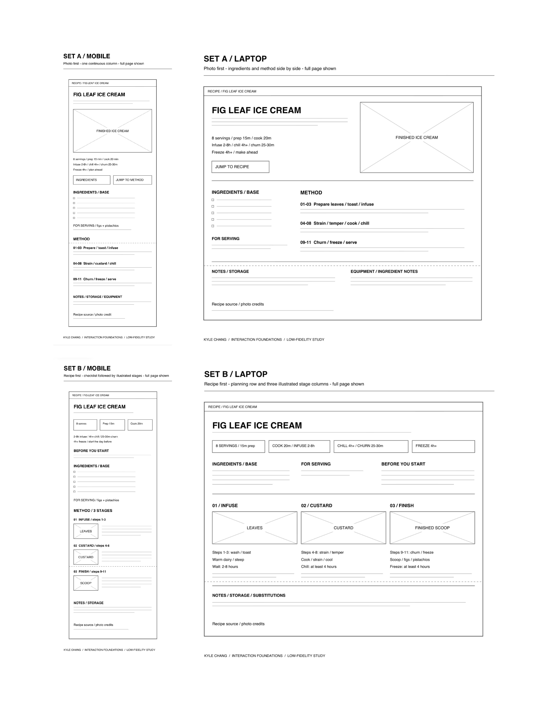

Fig Leaf Ice Cream: Low-Fidelity Prototypes
Kyle Chang - Interaction Foundations
Two layout directions, each shown as a full mobile and laptop page.
- Set A: Photo-first layout. Ingredients and method sit side by side on laptop and stack on mobile.
- Set B: Recipe-first layout. Planning information comes first, followed by three illustrated cooking stages.
Open the full-size image to zoom in

Top row: Set A - mobile and laptop. Bottom row: Set B - mobile and laptop. Dotted lines mark the first screen edge; the layouts continue below.